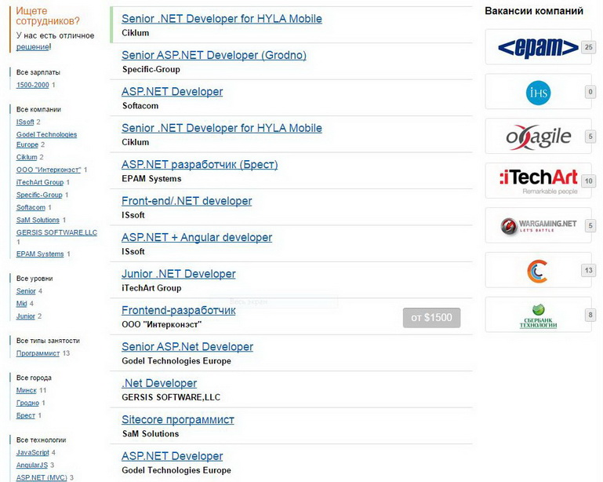
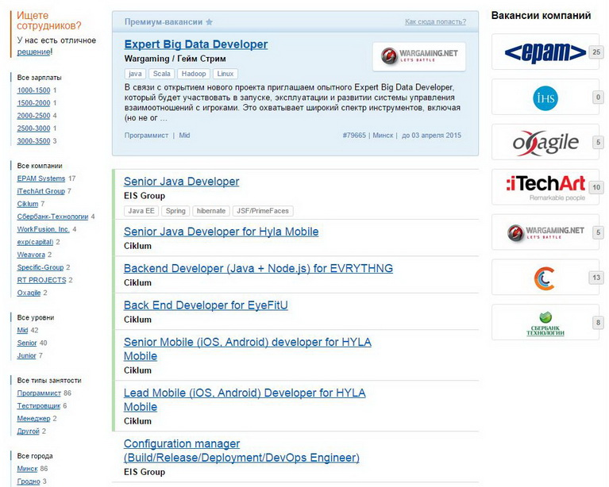

Information technologies in Belarus
Curiously enough, among myriads of blogs and social services, which have appeared lately, there is not so much
ones for people (programmers, Q&As and other ones who is connected with IT) who have built them. Such an imbalance
has been mended and a project dev.by has been launched for belorussian IT people.
In IT it's not a secret that a main secret is a salary. It is so happened that to find an information about who and
how much earns for nis or her programming work is hardly possible even among friends and office colleagues. So
seeking to provide with an adequate assessment of the labor market in IT-industry, dev.by with the help of
belorussian IT specialists collects and publishes information about about salaries considering speciality,
employee experience and technologies he or she uses.
C#
According to the site dev.by there is just 13 job vacancies in Belarus and among them only one proposal in Grodno. The only specified salary is 1500$.
Java
With Java development situation is significantly different. Proceeding from search result, Java developers have 49 potential vacancies. In addition they can rely on salary from 1000$ to 3500$. In Grodno the amount of free vacancies is equal to 2.